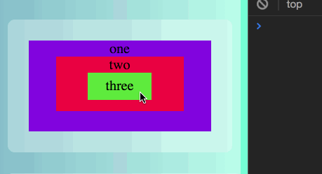
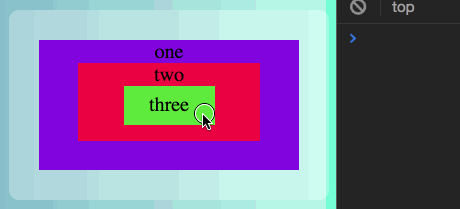
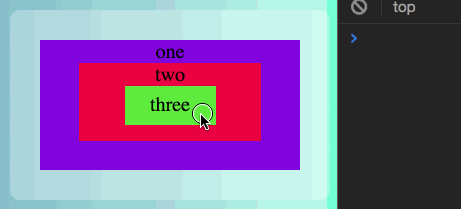
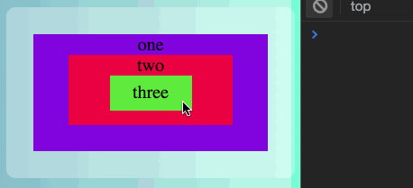

Psst: have a look at the JavaScript Console 🌹
In the example below, a click event listener is added to the three nested divs inside example. The callback function logs the element class to the console.
On clicking the deepest nested div, three, it would be expected to see its class being logged to the console. And it is, indeed. But also, one and twoare output. That is due to event bubbling. When we click on three div, we are actually also clicking on two, and on one, and on example, [...] and on body, and on document, and on window and so on.
The click event is handled in two steps. To figure out which element you clicked it crawls down the DOM. So, in our example the event capture goes: body was clicked, and then one, two and three. Once it has captured all events, from top to bottom, it starts firing them from bottom to top, bubbling up the event.
The event will be dispatched by the current listener, before being dispatched to any elements beneath it in the DOM.
By appending an object with the option capture: true, instead of firing the events from bottom to top, the browser will dispatch each event in the capture step. It captures the first event and fires it, then it goes to the next one, captures and fires it, and so on. The output in the console can be observed in the gif below:
Prevents further propagation of the current event in the capturing and bubbling phases.
So, when we click the three div, the first time the function executes, the stopPropagation() call will prevent the other event triggering. In other words, it stops bubbling.
Invokes the listener only one time, deataching it from the element once fired.
Using the option once or calling removeEventListener(), actually produce the same effect.
MDN Web Docs. (n.d.).EventTarget.addEventListener(). Retrieved February 11, 2018, from https://developer.mozilla.org/en-US/docs/Web/API/EventTarget/addEventListener
MDN Web Docs. (n.d.).Event.stopPropagation(). Retrieved February 11, 2018, from https://developer.mozilla.org/en-US/docs/Web/API/EventTarget/addEventListener